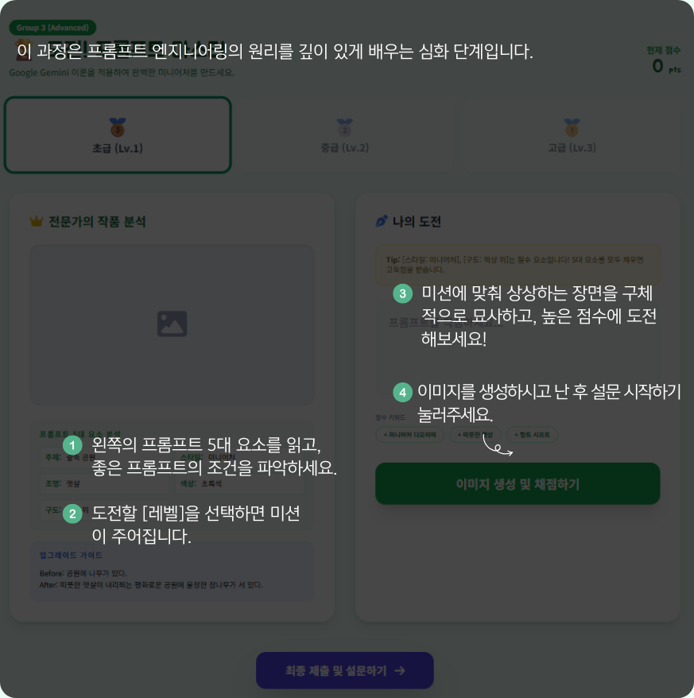

Group 3 (Advanced)
🏆 도전! 프롬프트 마스터
좋은 프롬프트의 5대 요소를 바탕으로 초급·중급·고급 레벨의 미션에 도전하고, AI 피드백을 통해 프롬프트를 정교화하는 조건입니다.
현재 점수
0
🥉
초급 (Lv.1)
기본 요소 3개 이상 포함
🥈
중급 (Lv.2)
요소 4개 이상, 일관성 강화
🥇
고급 (Lv.3)
요소 5개 모두 포함, 정교한 표현
전문가의 작품 분석

좋은 프롬프트의 5대 요소
주제 / 대상
무엇을 중심으로 그릴지 명확히 설명
세부 요소
배경, 사물, 소품, 인물 등 구체화
조명 / 분위기
햇살, 야간 조명, 평화로운 느낌 등
구도 / 시점
탑뷰, 사선 구도, 클로즈업 등
스타일
미니어처 디오라마, 포토리얼, 동화풍 등 표현 방식
심사용 포인트
실제 실험에서는 이 조건에서 프롬프트의 구성 원리를 학습자가 더 명시적으로 이해하고, 수정 및 점검 루프를 경험할 수 있도록 설계되었습니다.
나의 도전
심사용 데모
OpenAI가 프롬프트를 바탕으로
점수
,
강점
,
보완점
,
개선 프롬프트
를 제안합니다.
AI 피드백 받기
이미지 생성하기
AI 평가
아직 평가를 요청하지 않았습니다.
생성 결과
생성된 이미지가 여기에 표시됩니다.
사후 설문 구성 보기
종료 화면 보기